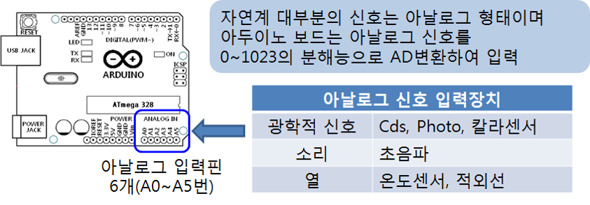
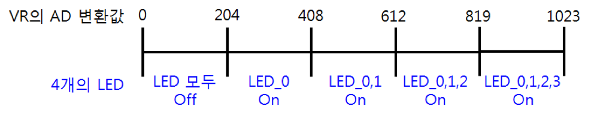

아두이노 보드는 아날로그 입력 핀을 사용하여 변하는 아날로그 신호를 받아들여 A/D변환 (Analog to Digital Conversion)하여 0~1023 범위의 값으로 읽어 들일 수 있는 기능을 제공한다.
아두이노 Uno 보드: A0~A5의 6개 아날로그 입력 핀 제공

LED를 디지털입출력핀 10번과 연결
베이스보드 JP1의 0번 (LED에 연결됨)과 아두이노보드의 디지털입출력 핀 10번 연결
베이스보드 JP9의 VR과 아두이노보드 아날로그 입력 핀 A2 연결
analogRead( ) 함수 사용
예: 아날로그 입력 핀 A2번으로 입력을 받는 명령
analogRead(2);/*
가변저항을 변화시키면 LED의 켜지고 꺼지는 간격이 변화
- 가변저항 은 아두이노 보드의 아날로그 입력 A2에 연결
- LED는 디지털입출력 핀 10번에 연결
*/
int analogPin = 2; // 아날로그 핀 2
void setup() {
pinMode(10, OUTPUT);
}
void loop() {
int val = analogRead(analogPin); // A/D변환되어 0~1023 범위 값으로 변화
digitalWrite(10, HIGH);
delay(val); // 시간지연이 0~1023 msec 범위에서 조절
digitalWrite(10, LOW);
delay(val); // 시간지연이 0~1023 msec 범위에서 조절
}LED는 PWM 핀 5번 연결
베이스보드 JP1의 0번 (LED에 연결됨)과 아두이노보드의 PWM 출력 핀 5번 연결
베이스보드 JP9의 VR과 아두이노보드 아날로그 입력 핀 A2 연결
가변저항으로 LED의 밝기를 조절
/*
가변저항으로 LED의 밝기를 조절
- 가변저항을 통하여 입력되는 0~1023 범위의 값을 0~255범위의 값으로 변환
*/
void setup() {
pinMode(5, OUTPUT);
}
void loop() {
int val1 = analogRead(2); // 아날로그입력 2번을 통하여 입력된 전압값을
// 0~1023범위의 값으로 읽어 val1에 저장
int val2 = map(val1, 0, 1023, 0, 255); // 0~1023범위의 val값을 0~255 범위로 변환
analogWrite(5, val2); // PWM 신호로 출력
delay(20);
}LCD 화면에 아날로그 소자인 가변저항(VR)의 값을 입력 받아 출력하는 프로그램을 작성합니다.
가변저항(VR)를 가변시키면, 다음 그림과 같이 값을 AD 변환하여 LED 0부터 3까지 4개의 LED를 값에 따라 켜지는 스케치를 작성해 보자. 
[힌트]
if (k > 0 && k <= 10) {
}